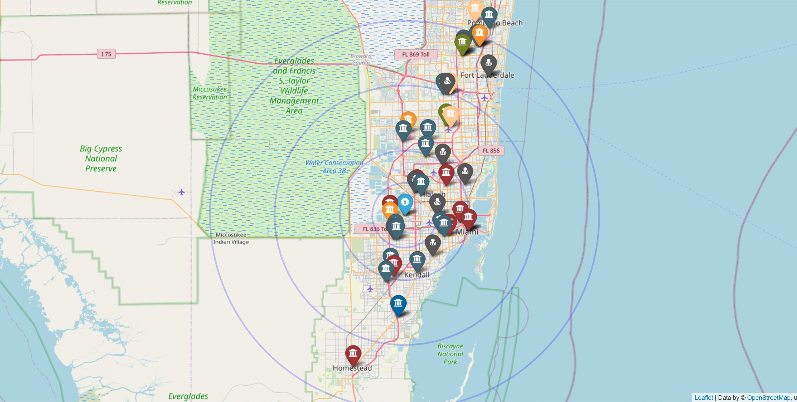

Aug 2020 — PresentCurrent role
Payden & Rygel
Data Engineer · Los Angeles, CA
Financial data, from migration to reconciliation.
Snowflake pipelines, derivatives data migration, regulatory reporting and reconciliation.
LOS ANGELES, CALIFORNIA
Hi, I’m
Data EngineerFinancial data. AI foundations.
I build financial data pipelines with Python, SQL, Snowflake and Airflow at Payden & Rygel. My background also includes NLP and model deployment at NVIDIA.

01 / EXPERIENCE
Financial pipelines today.
Machine learning in the foundations.
Data Engineer · Los Angeles, CA
Snowflake pipelines, derivatives data migration, regulatory reporting and reconciliation.
Data Engineer · Institutional Research & Analytics · Long Beach, CA
Education-data pipelines and classification models for student-outcome analysis.
Software Developer · Bangalore, India
Text classification and multilingual information extraction.
Software Developer Intern · Bangalore, India
TensorFlow sentiment analysis and model serving during a 2017 internship.
Software Developer · Bangalore, India
Python web applications and data-warehouse workflows.
02 / EXPERTISE
Select a skill to see where it fits
in my professional experience.
EXPERIENCE, NOT A SKILL RATING
Build and maintain ETL/ELT pipelines for portfolio data, and own derivatives data mapping in a Snowflake-on-Azure migration.
Fixed income · Derivatives · FX/NDF · Regulatory reporting · Data quality & reconciliation
03 / SELECTED PROJECTS
Public examples and earlier projects.
Separate from employer work.
AI-assisted educational demo
Explore how late arrivals, cancellations and replay affect synthetic trade state.
View project ↗
2020Academic project · archive
An earlier exploration of public education data and institutional analytics.
View project ↗Earlier NLP project · archive
Spoken-language classification from an earlier phase of my machine-learning work.
View project ↗04 / EDUCATION
M.S., Computer Science
B.E., Computer Science & Engineering
05 / CONTACT
I’m interested in data engineering for AI teams,
with a background in financial systems and machine learning.